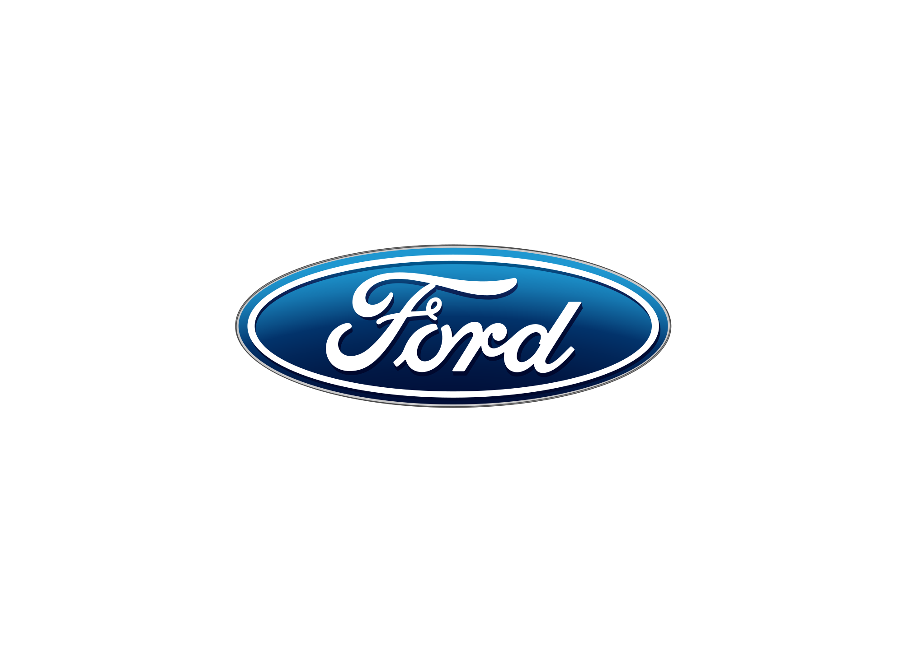

Ford Software Engineering Internship

At Ford I build internal automation and analytics tooling for manufacturing and engineering teams. The work lives in production codebases and focuses on turning manual operational workflows into software that is easier to run, measure, and trust.
- Scope: internal tooling for manufacturing and engineering workflows
- Focus: workflow automation, operational visibility, and analytics surfaces
- Working style: production code, stakeholder feedback, and cross-functional delivery
The value is reliability and clarity: less time spent on repetitive process friction, and better access to the signals teams need to make decisions.